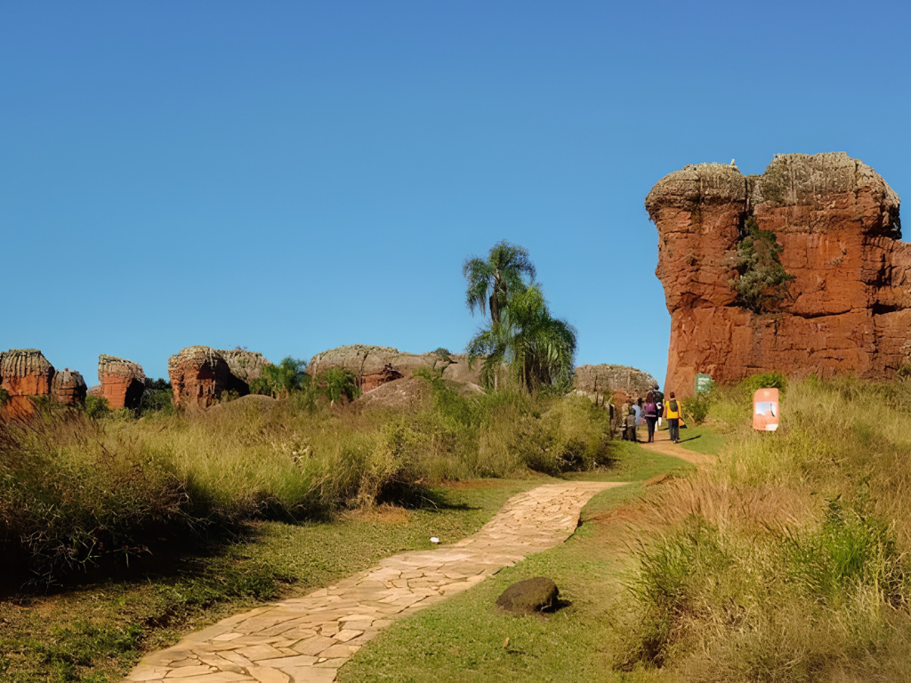

Piauí é um estado localizado na região Nordeste do Brasil, conhecido por suas paisagens naturais, riqueza histórica e forte tradição cultural. Sua capital é Teresina, a única capital nordestina que não está situada no litoral. A economia piauiense é baseada na agricultura, pecuária, comércio e produção de grãos, especialmente soja e milho. O estado possui importantes atrações naturais, como Parque Nacional da Serra da Capivara, famoso pelos sítios arqueológicos com pinturas rupestres consideradas algumas das mais antigas das Américas. Apesar de ter um litoral pequeno, o Piauí também conta com belas praias e áreas de manguezais. Culturalmente, o estado preserva tradições nordestinas presentes na música, no artesanato e nas festas populares, além de uma culinária típica marcada por pratos como carne de sol, paçoca e capote.
